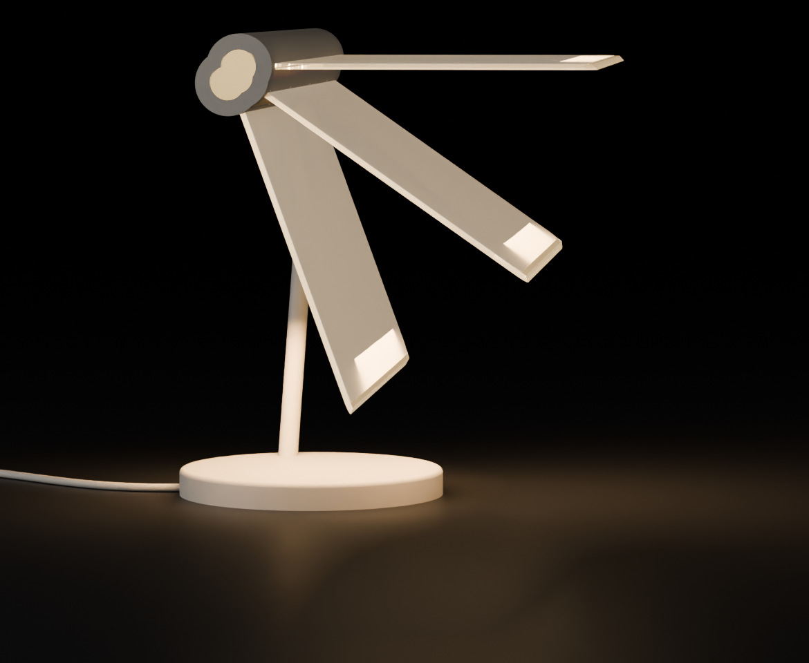
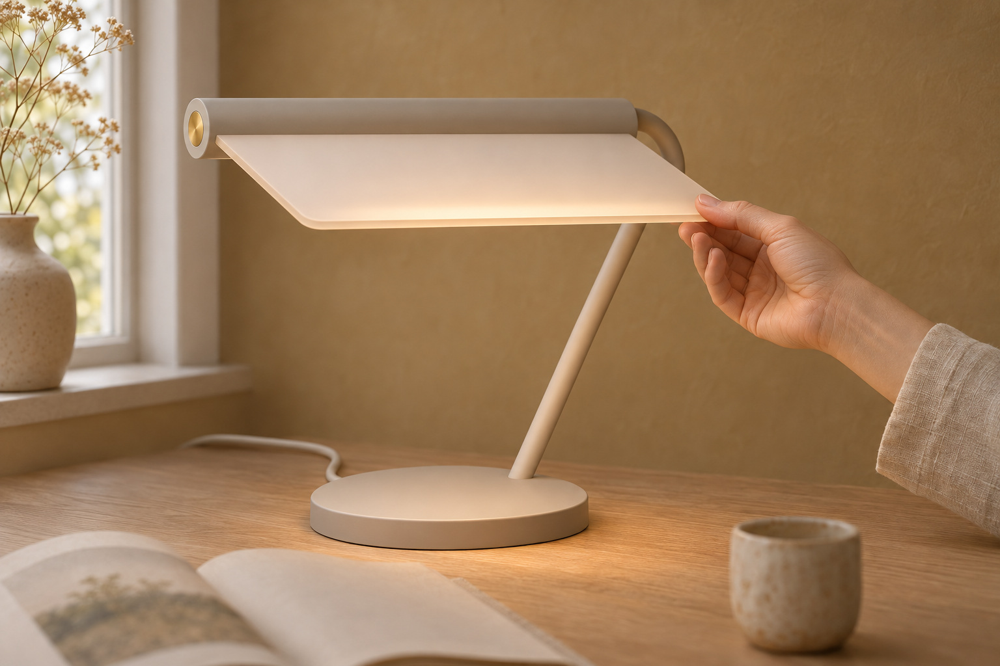

Bjelken dreier rett på røyret, frå vassrett til 80°. Vassrett lyser ruta ned på pulten. Bratt vender ho undersida mot veggen og står som eit varmt vindauge.
Ein skrue inni bjelken stoppar rørsla i begge endar og held bjelken på røyret. Ein annan set friksjonen éin gong. Ingen av dei syner.